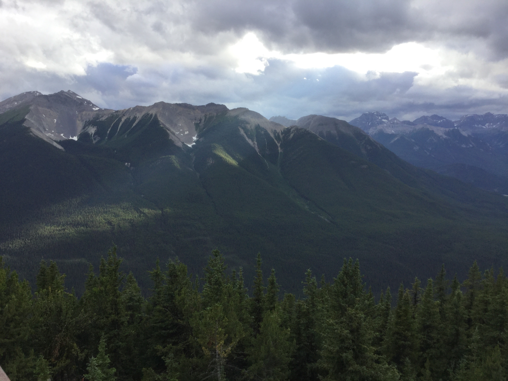
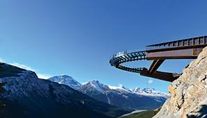

This is a image of the Banff Town
Banff is currently a town found in the Banff National Park, a park that covers an area of 6,641 square km. Banff is located in Alberta and is 110-180 km or 68-112 mi west of Calgary at an elevation of 1,400m above sea level. Banff was first settled in the year of 1880, when the transcontinental railway was built through the Bow Valley. Soon after, in the year of 1883, several hot springs under Sulphur Mountain (Now a tourist attraction). Canada, soon created a reserve/protected area in this location. This area 26 square km but eventually expanded to 673 square km and is now known as the Banff National Park. The Banff National Park was declared as an official park by the United Nations. It became part of the Canadian Rocky Mountain Parks and a World Heritage Site. As of today, it is one of the most popular tourist destinations in Canada with people all around the globe visiting this esteemed park. You can get more information on this topic at the wikipedia page about Banff.
The area around Banff is known as the Rocky Mountains the few notable mountains surrounding Banff are Sulphur Mountain, Cascade Mountain, Mount Rundle and Norquay. The Climate of Banff is considered as subarctic climate. This is probably due to it's high elevation. As in the winter the average temperatures ranges from −13.3 °C to −0.2 °C. The average summer temperature ranges from 7.3 °C to 21.6. Snow in Banff has been recorded in all months over the year and annual snowfall averages 1.91m. The Banff National Park includes 2 towns in it, the town of Banff and Lake Louise. It also shares borders to the Jasper National Park up north, the Yoho National Park in the west and the Kootenay National park in the South. You can get more information on this topic at the wikipedia page about Banff.
To think about going to Banff, you first have to think about how to get there. I would recommend a plane ticket to Calgary. Why? Well, a plane ticket saves time and even can save money. The trip to Banff by car is a very tedious and tiring one. It will have a significant impact on the driver so you will probably need 2 drivers. Also, unless you want to drive a longer amount, you would need to cross the US and Canadian border twice to get there. Combined with the traffic and construction sights you have a trip that would take anywhere between 30-50 hours. This means that it will be extremely tiring and time consuming compared to a flight that will take around 4 hours and 15 minutes if we include the time the time we should get to the airport for the luggage, registration of plane ticket and security check, it would still be 3-5 times faster by plane. Next, let's move to the point about money. The drive is on average 35-40 hours depending on which route you take. But, anyways you still have to stay at a hotel for at least 1 night, assuming the fact that you leave at 9 in the morning and rest only 20 minutes for food for lunch and dinner and you stop driving at 9:40. Then you would have gone 12 hours in a day. Then during the next day, you get up early and make the rest of the journey. During the night, if you want to stay in a hotel, it will probably take around $200 a night and with the fuel fee and food purchased. With the return trip, it is probably more worth to take a plane. This is only if you are alone if it is a family, the drive is probably the better deal, however, I don't believe the time you are using is worth it as money can buy a lot of things but it cannot buy back the time you used. Also, you guys might be worried about the lack of a car to go around Banff well, you can rent a car at the airport which isn't actually that bad, I recommend a van for the large space to carry luggage and passengers.
Now, there is another thing that we have to take into account. That is, do we go with a tour group or do we plan the trip ourselves. The first one will take less time and save money but you will not able to have freedom, while the second one will take more time but you do have freedom and control of what you are seeing and doing and where you are staying. In my opinion and my experience, the second is a better choice for a vacation and enjoyment while the first one is a choice for an easier and cheaper trip. I found out, how much more enjoyable the second choice was, although you have to commit more time for this trip. To plan the trip yourself gives the freedom of where to stay and what sights you can see. When you go with a tour they usually distribute an equal amount of time for each location, not giving you the freedom to go on trails and explore the locations you like more, while skipping locations you like less. It also gives you extra opurtunities for planning a fun experience that a tour might not have. Some selection of tours to banff. A website that is for people who want to plan the trip themselves.
Where to stay and for how long should you stay when you go to Banff, personally I feel that you should go there for around 1 1/2 weeks as anything less then a 1 week is to short and anything over 2 weeks might get boring. I recommend spending most of your time at Banff, then move on to Lake Louise, then finally Jasper. You should stay at Lake Louise for around a day as it is least worth it as most tourist locations are accessible from Banff. At Jasper, you should stay for the rest of your stay, leaving 2 days, 1 night for your trip back. This is the travelplan that I feel should give you the best experience, but, do more research yourselves, maybe you prefer Lake Louise over the other's.
In Banff there are mutiple tourist attractions. The many tourist attractions in Banff include, Mountains, Lakes, Waterfalls, Glacier, Trails and Nature in general. The tourist attractions in Banff are all spectacular but the few below are what I consider some of the must sees.
Sulphur Mountain is a mountain that is located near Banff, it is a Mountain that has an elevation of 2451m however, you can drive up part of the way, reducing the ascent by foot to only 670m. When you reach the upper parking lot, you can go and bath in the hot springs, but, first I reommend scaling the Mountain. When you scale the Mountain, you can either choose to climb by foot or buying a ticket to go up on the Gondola. If you decide to climb, you must note that although the Prominence is 670m high, the actual trail is around 5.4 km not including the extra bit of the boardwalk to go to Sanson Peak. The ascent will probably take you around 3 hours including breaks, and by the time you are up, there are restaurants and Wifi in the building so you can take a break order something and chill. However, there is an extra path to Sanson Peak, although there is little difference in the sight that you can see. I recommend going outside after you are restedAfter and taking a look at the beautiful sight(As seen below). After, you might be thinking about the horrifying descent, but, you can actually take the Gondola down for free. After, this you can go to the hot springs and take your well deserved bath.

The sight on top of Sulphur Mountain ©
A picture of Moraine Lake's pearl blue water ©
The Lake known as Moraine Lake is one of the most beautiful and famous tourist attractions in Lake Louise, probably second to only Lake Louise. However, in my opinion this Lake is the more beautiful one of the two. Only a limited amount of people per day in can go to the Lake because of the limited parking, so I suggest to get the parking tickcet really early, so you have a chance to see this Lake. This Lake is located 14km outisde of Lake Louise and is within the Valley of the 10 peaks. The journey to the Lake is diffcult as your car has to scale 12km worth of mountain roads before arriving at the Lake which has a 1,885m elevation and is what makes this Lake so special. When you arrive at a Lake, you will either witness a beautiful pearl blue colour or, if you are lucky, a beautiful reflection of the 10 peaks. To the side of the parking lot near the rest rooms you can also go up a path to the slightly elevated point to get a better view and you can also rent a canoe to explore the Lake. Moraine Lake is one of the most beautiful tourist sights that I have ever seen and I definetly recommend it to anyone who went to Banff or Lake Louise.
A picture of Lake Louise's pearl blue water ©
The most famous Lake in the Banff area, the sight at Lake Lousie certainly lives up to it's popularity. You can even live near the Lake or right beside it in a comfortable hotel. This Lake like Moraine Lake has a slightly less beautiful pearl blue water and a reflection of the mountains. But, what makes this Lake unique is the fact that when the sun rises it makes the most beautiful sight ever. The parking at Lake Louise is not as scare as Moraine Lake but is still limited. It has an elevation of 1,600m which is why it has the beautiful pearl blue water. Overall, this make is a mustsee and if you have the oppurtunity to see the sun rise near the Lake, I recommend you to see the beauty first hand as it will cost you nothing but a bit less sleep.
A picture of the Columbia Icefiled after ascend with a rover ©
A picture of the Glacier Skywalk
This is perhaps the one that I recommend the most. Why? Well, it is basically a once in a lifetime experience for most people. This, is a fairly far drive away from Banff and closer to Jasper National Park and the town of Jasper so if you are going to Jasper definetly come here, if not I recommend it anyways. Aside from the cost, this is such a valuable experience, firstly, you get around 15 minutes to explore and go on top of a glacier, you also get a oppurtunity to drink glacier water. Then, you get to go to the Glacier Skywalk, this one is okay, it is basically the Skywalk on top of the CN-Tower except for the fact that it is built on a edge of a cliff. These 2, especially the Columbia Icefield are once in a lifetime experiences for most people. Which is why I definetly recommend the trip to these 2 destinations, once you arrive at the vistor center for Columbia Icefield you can ride the rover and the walk on top of the glacier, after you are done a bus will take you to the Skywalk. These 2 are fabulous experiences that I recommend for everyone.
I hope you can use this sight to plan your ideal trip to Banff and I hope you have a pleasant time there.